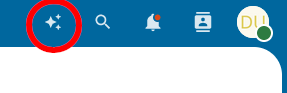
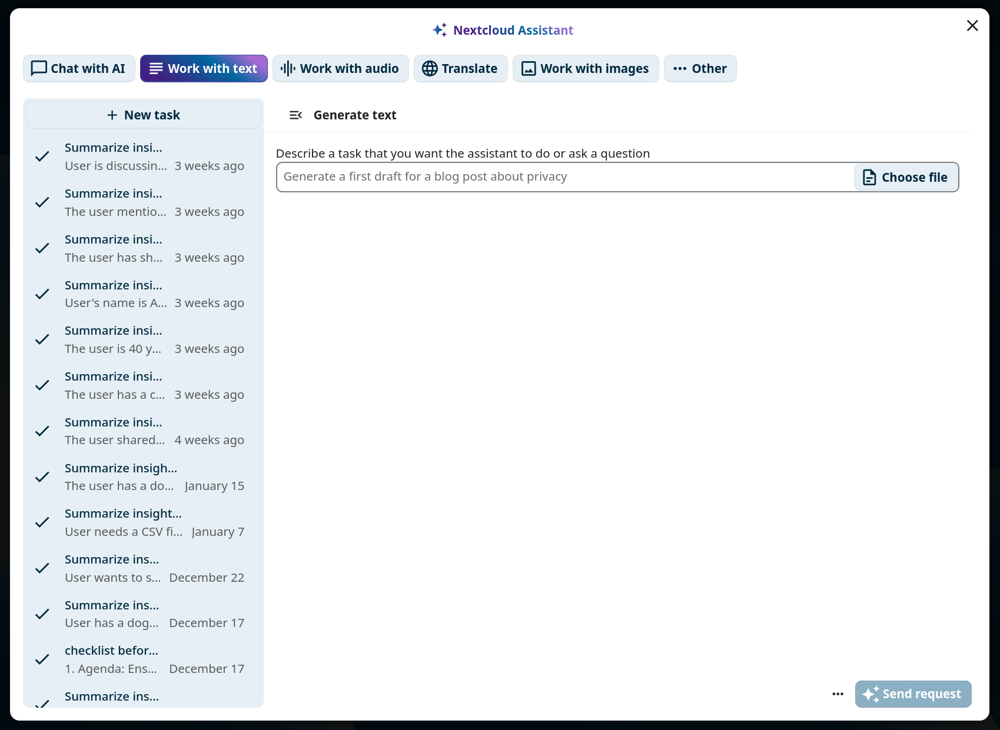
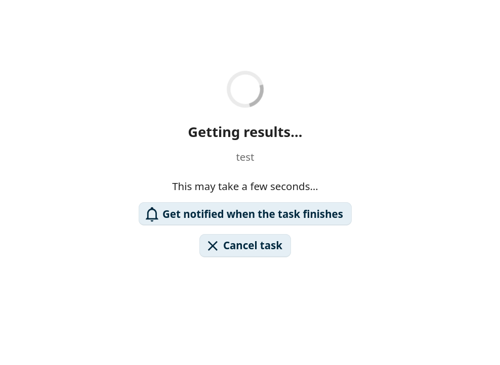
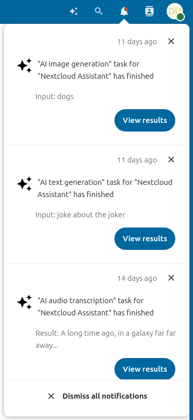
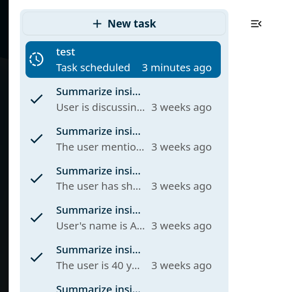
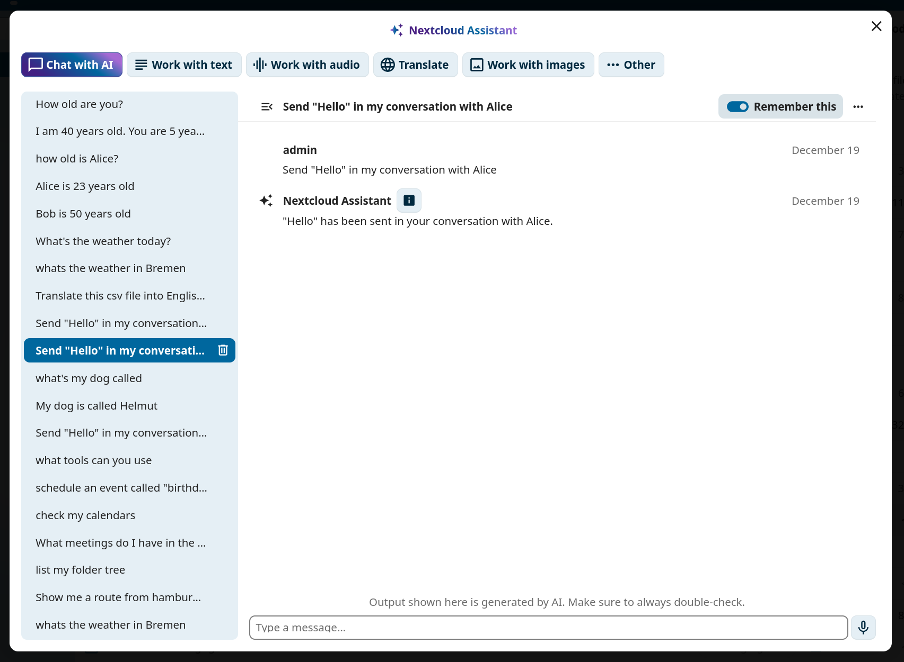
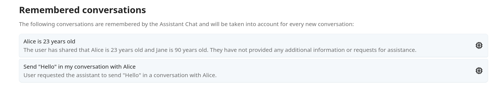
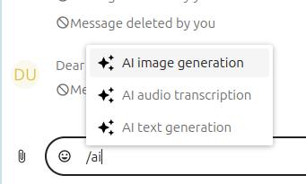
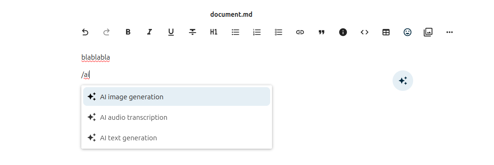

KI-Assistent
Der Nextcloud KI-Assistent bietet Ihnen direkt in der Weboberfläche Zugriff auf KI-gestützte Werkzeuge. Sie können Aufgaben wie Textzusammenfassung, Bilderzeugung und Sprachtranskription ausführen, Unterhaltungen mit einem angebundenen Sprachmodell führen und mit Smart Pickern KI-generierte Inhalte in Dokumente und Nachrichten einfügen.
Bemerkung
Für den KI-Assistenten muss Ihre Administration mindestens eine KI-Backend-App installieren und konfigurieren. Einzelheiten finden Sie in der Administrationsdokumentation des KI-Assistenten.
Persönliche Einstellungen
Die persönlichen Einstellungen des Assistenten finden Sie unter Persönliche Einstellungen im Abschnitt Künstliche Intelligenz. Dort können Sie den Eintrag des Assistenten im oberen Menü deaktivieren, die KI-bezogenen Smart Picker aktivieren oder deaktivieren und den Namen des Ordners ändern, in dem der Assistent seine Ergebnisse speichert.
Wo generierte Inhalte gespeichert werden
Inhalte, die der Assistent für Sie erzeugt, etwa generierte Bilder und Ergebnisse von Sprache-zu-Text, werden in einem Ordner in Ihren Dateien gespeichert. Er heißt Assistant, sofern Ihre Administration für die Instanz keinen anderen Namen gewählt hat.
Sie können unter Datenordner in den persönlichen Einstellungen des Assistenten einen eigenen Namen dafür festlegen. Lassen Sie das Feld leer, um den von Ihrer Administration festgelegten Namen beizubehalten; der Platzhalter zeigt, welcher das ist.
Bemerkung
Das Ändern des Namens benennt Ihren vorhandenen Ordner weder um noch verschiebt es ihn. Die Änderung gilt, sobald das nächste Mal ein Ordner erstellt werden muss; alles, was vor der Änderung erzeugt wurde, bleibt also, wo es ist.
Eine Aufgabe ausführen
Um den Assistenten zu öffnen, klicken Sie auf das Assistentensymbol in der Navigationsleiste oben rechts.

Abbildung 1: Das Assistentensymbol in der Navigationsleiste oben rechts.
Wählen Sie oben im Assistentenbereich einen Aufgabentyp, füllen Sie das Eingabeformular aus und klicken Sie unten rechts auf die Schaltfläche zum Absenden.

Abbildung 2: Das Assistentenaufgabenformular.
Ihre Aufgabe wird nach Möglichkeit sofort ausgeführt oder zur späteren Ausführung eingeplant.

Abbildung 3: Warten auf Aufgabenergebnisse.
Benachrichtigungen
Wenn eine Aufgabe eingeplant wurde, können Sie sich benachrichtigen lassen, sobald sie abgeschlossen ist. Klicken Sie in der Benachrichtigung auf die Schaltfläche Ergebnisse anzeigen, um das Ergebnis der Aufgabe anzuzeigen.

Abbildung 4: Benachrichtigung über den Abschluss der Aufgabe.
Aufgabenverlauf
Im linken Bereich des Assistenten wird ein Aufgabenverlauf angezeigt, der nach dem aktuell ausgewählten Aufgabentyp gefiltert ist. In dieser Liste können Sie frühere Aufgaben erneut starten, löschen oder abbrechen.

Abbildung 5: Aufgabenverlauf im linken Bereich.
Mit KI chatten
Im Reiter Mit KI chatten des Assistenten können Sie eine Unterhaltung mit der angebundenen KI führen. Geben Sie unten im Textfeld eine Nachricht ein und drücken Sie zum Senden Eingabe. Klicken Sie auf Neue Unterhaltung, um einen separaten Unterhaltungsverlauf zu beginnen.

Abbildung 6: Mit der KI-Schnittstelle chatten.
Jede Unterhaltung hat ihren eigenen Kontext. Aktivieren Sie bei einer Unterhaltung Merken, um sie dem Langzeitgedächtnis der KI hinzuzufügen, sodass ihr Kontext in allen künftigen Unterhaltungen verfügbar ist. Deaktivieren Sie die Option wieder, um die Unterhaltung aus dem Gedächtnis zu entfernen.
Im Abschnitt KI-Assistent Ihrer persönlichen Einstellungen können Sie alle gemerkten Unterhaltungen einsehen.

Abbildung 7: Erinnerte Gespräche, aufgelistet in persönlichen Einstellungen.
Smart Picker
Die Assistent-App stellt drei Smart Picker bereit, die in Talk, im Texteditor und überall dort verfügbar sind, wo Rich-Text bearbeitet werden kann. Geben Sie / gefolgt von ai ein, um die gefilterte Liste der Anbieter zu sehen.
In Talk:

Abbildung 8: KI-Smart Picker in Talk.
Im Texteditor:

Abbildung 9: KI-Smart-Picker im Texteditor.
Jedes über den Smart Picker erzeugte Ergebnis kann direkt in den aktuellen Kontext eingefügt werden.
Kontext-Agent
Wenn die Administration die App Context Agent installiert, kann der KI-Assistent automatisch mit Ihren Nextcloud-Apps interagieren. Sie müssen nichts weiter einrichten; die Agent-Werkzeuge stehen in derselben oben beschriebenen Oberfläche Mit KI chatten zur Verfügung.
Wenn Context Agent aktiviert ist, können Sie den Assistenten bitten, Aktionen in Nextcloud auszuführen, indem Sie Anweisungen in natürlicher Sprache in den Chat eingeben. Der Assistent verwendet im Hintergrund „Werkzeuge“, um Ihre Anfragen auszuführen.
Bemerkung
Welche Werkzeuge verfügbar sind, hängt davon ab, welche Apps auf Ihrer Nextcloud-Instanz installiert sind und welche Werkzeuggruppen Ihre Administration aktiviert hat. Einige der folgenden Beispiele erfordern bestimmte Apps wie Deck, Talk oder Mail.
Beispiel-Prompts
Im Folgenden finden Sie Beispiele dafür, worum Sie den Assistenten bitten können. Kombinieren Sie mehrere Anweisungen in einer Nachricht, und der Agent verkettet die nötigen Werkzeuge automatisch.
KI-Werkzeuge
Eine Frage an Context Chat stellen (erfordert Context Chat)
Beispiel-Prompt: „Wie läuft das Verfahren bei Krankmeldungen im Unternehmen ab?“
Eine Mediendatei transkribieren (erfordert den aktivierten Aufgabentyp „Audio transkribieren“)
Beispiel-Prompt: „Die folgende Datei transkribieren: https://mycloud.com/f/9825679“ (Kann über den Smart Picker ausgewählt werden.)
Dokumente erstellen (Erfordert Nextcloud Office)
Beispiel-Prompt: „Einen Foliensatz für meine Präsentation über Katzen erstellen.“
Beispiel-Prompt: „Eine Tabelle mit plausiblen Zahlen zu Ländern und ihrer Einwohnerzahl erstellen.“
Beispiel-Prompt: „Ein PDF mit einer Übersicht über Sehenswürdigkeiten in Berlin erstellen.“
Bilder erzeugen (erfordert den aktivierten Aufgabentyp „Bilderzeugung“)
Beispiel-Prompt: „Ein Bild im Cartoon-Stil von einem römischen Soldaten erzeugen, der etwas auf einem Laptop tippt.“
Kalenderwerkzeuge
Kalender des Benutzers anzeigen
Beispiels-Prompt: „Meine Kalender auflisten“
Ein Ereignis im Kalender des Benutzers planen
Beispiel-Prompt: „Einen Termin mit Andrew morgen um 12 Uhr anlegen.“
Freie Zeiten in Kalendern von Benutzern finden
Beispiel-Prompt: „Einen freien einstündigen Zeitraum für eine Besprechung mit mir und Marco nächste Woche finden.“
Aufgabenwerkzeuge
Eine Aufgabe erstellen
Beispiel-Prompt: „Eine Aufgabe zum Lebensmitteleinkauf mit Fälligkeit morgen erstellen.“
Aufgaben anzeigen
Beispiels-Prompt: „Meine offenen Aufgaben auflisten“
Eine Aufgabe fertigstellen
Beispiel-Prompt: „Die Aufgabe Lebensmitteleinkauf als erledigt markieren.“
Details einer Aufgabe aktualisieren
Beispiel-Prompt: „Die Priorität der Aufgabe Lebensmitteleinkauf auf die höchstmögliche Priorität setzen.“
Beispiel-Prompt: „Das Fälligkeitsdatum meiner Aufgabe Arbeitsbericht auf Anfang nächster Woche ändern.“
Eine Aufgabe löschen
Beispiel-Prompt: „Die Aufgabe Lebensmitteleinkauf in meinen Aufgaben löschen.“
Kreise/Teams-Werkzeuge
Kreise anzeigen
Beispiel-Prompt: „Alle meine Teams anzeigen.“
Kreismitglieder anzeigen
Beispiel-Prompt: „Alle Mitglieder meines Teams Content Marketing auflisten.“
Neuen Kreis erstellen
Beispiel-Prompt: „Ein neues Team namens ‚Wandergruppe‘ erstellen.“
Mitglieder zu Kreisen hinzufügen
Beispiel-Prompt: „Ralph zum Team Wandergruppe hinzufügen.“
Mitglieder aus Kreisen entfernen
Beispiel-Prompt: „Ralph aus dem Team Wandergruppe entfernen.“
Kreis-Details ändern
Beispiel-Prompt: „Den Namen des Teams Wandergruppe in ‚Outdoor-Gruppe‘ ändern.“
Beispiel-Prompt: „Dem Team Wandergruppe folgende Beschreibung hinzufügen: Wir gehen einmal im Monat zusammen wandern. Machen Sie mit.“
Einen Kreis löschen
Beispiels-Prompt: „Lösche das Team der Wandergruppe.“
Eine Datei mit einem Kreis teilen
Beispiel-Prompt: „Meine Datei Wanderpläne.md mit dem Team Wandergruppe teilen.“
Kontaktwerkzeuge
Einen Kontakt finden
Beispiels-Prompt: „Wie lautet Annas E-Mail-Adresse?“
Eine Benutzer-ID suchen
Beispiels-Prompt: „Wie lautet Ralfs Benutzer-ID?“
Die Daten des aktuellen Benutzers suchen
Beispiels-Prompt: „Wo wohne ich?“
Kochbuchwerkzeuge
Rezepte auflisten
Beispiels-Prompt: „Meine Rezepte auflisten“
Nach Rezepten suchen
Beispiels-Prompt: „Hast Du Spaghettirezepte?“
Rezeptdetails abrufen
Beispiel-Prompt: „Die Details meines Rezepts für Spaghetti Carbonara anzeigen.“
Eine neues Rezept erstellen
Beispiel-Prompt: „Ein Rezept für Guacamole in meinem Kochbuch erstellen.“
Ein Rezept löschen
Beispiel-Prompt: „Das Guacamole-Rezept aus meinem Kochbuch entfernen.“
Rezeptkategorien anzeigen
Beispiel-Prompt: „Welche Rezeptkategorien habe ich in meinem Kochbuch?“
Deck-Werkzeuge (Erfordern Deck)
Deck-Boards anzeigen
Beispiel-Prompt: „Die Deck-Boards auflisten, auf die ich Zugriff habe.“
Liste die Karten eines einem Deck-Boards auf
Beispiel-Prompt: „Die Karten auf meinem Deck-Board Persönlich auflisten.“
Eine neue Karte hinzufügen
Beispiel-Prompt: „Meinem Deck-Board Persönlich eine Karte mit dem Titel ‚Spüle reparieren‘ hinzufügen.“
Einer Karte ein Label hinzufügen
Beispiel-Prompt: „Der Karte ‚Spüle reparieren‘ auf meinem Deck-Board Persönlich das Label ‚Dringend‘ hinzufügen.“
Einem Benutzer eine Karte zuweisen
Beispiel-Prompt: „Die Karte ‚Spüle reparieren‘ auf meinem Deck-Board Persönlich Andrew zuweisen.“
Eine Karte löschen
Beispiel-Prompt: „Die Karte ‚Spüle reparieren‘ auf meinem Deck-Board Persönlich löschen.“
Liste die Kommentare zu einem Deck-Board auf
Beispiel-Prompt: „Die Kommentare zur Karte ‚Spüle reparieren‘ auf meinem Deck-Board Persönlich anzeigen.“
Füge einen Kommentar zu einer Deck-Board-Karte hinzu
Beispiel-Prompt: „Den Kommentar ‚Erledige ich am Freitag‘ zu ‚Spüle reparieren‘ auf meinem Deck-Board Persönlich hinzufügen.“
Bearbeite einen Kommentar zu einer Deck-Board-Karte
Beispiel-Prompt: „Meinen letzten Kommentar zur Karte ‚Spüle reparieren‘ in ‚Auf Samstag verschoben‘ ändern.“
Lösche einen Kommentar zu einer Deck-Board-Karte
Beispiel-Prompt: „Meinen letzten Kommentar zur Karte ‚Spüle reparieren‘ auf meinem Deck-Board Persönlich löschen.“
Dateiwerkzeuge
Inhalt einer Datei abrufen
Beispiel-Prompt: „Die folgende Datei aus meinen Dokumenten abrufen: Design/Planung.md“
Beispiel-Prompt: „Die folgende Datei aus meinen Dokumenten abrufen: https://mycloud.com/f/98543234“
Ordnerbaum abrufen
Beispiels-Prompt: „Meine Dateien auflisten“
Einen öffentlichen Link für eine Datei oder einen Ordner erstellen
Beispiel-Prompt: „Einen öffentlichen Link für die folgende Datei erstellen: Design/Planung.md“
Eine neue Datei erstellen
Beispiel-Prompt: „Eine neue Datei Ideen.md in meinen Dateien erstellen und sie mit Ideen für Wanderziele im Schwarzwald füllen.“
Einen neuen Ordner erstellen
Beispiel-Prompt: „Einen neuen Ordner ‚Wanderpläne‘ in meinen Dateien erstellen.“
Eine Datei verschieben
Beispiel-Prompt: „Die Datei Ideen.md in den Ordner Wanderpläne verschieben.“
Eine Datei kopieren
Beispiel-Prompt: „Die Datei Ideen.md in meinen Ordner Notizen kopieren.“
Ein Datei löschen
Beispiel-Prompt: „Die Datei Ideen.md löschen.“
Formularwerkzeuge
Alle Formulare anzeigen
Beispiel-Prompt: „Alle Formulare auflisten, auf die ich Zugriff habe.“
Details zu einem Formular erhalten
Beispiel-Prompt: „Alle Details zum Anmeldeformular für die Klausurtagung anzeigen.“
Einem Formular eine Frage hinzufügen
Beispiel-Prompt: „Dem Anmeldeformular für die Klausurtagung folgende Frage hinzufügen: ‚Anzahl der Teilnahmetage‘.“
Alle Antworten eines Formulars abrufen
Beispiel-Prompt: „Alle Antworten auf das Anmeldeformular für die Klausurtagung auflisten.“
Formulareinstellungen aktualisieren
Beispiel-Prompt: „Das Anmeldeformular für die Klausurtagung Ende nächster Woche ablaufen lassen.“
Ein Formular löschen
Beispiel-Prompt: „Das Anmeldeformular für die Klausurtagung löschen.“
Lesezeichenwerkzeuge
Alle Lesezeichen anzeigen
Beispiel-Prompt: „Alle meine Buchzeichen anzeigen.“
Ein Lesezeichen hinzufügen
Beispiel-Prompt: „Ein Lesezeichen für https://nextcloud.com mit dem Titel ‚Nextcloud-Startseite‘ hinzufügen.“
Ein Lesezeichen löschen
Beispiel-Prompt: „Das Lesezeichen für https://nextcloud.com löschen.“
Ein Lesezeichen aktualisieren
Beispiel-Prompt: „Den Titel des Lesezeichens für https://nextcloud.com in ‚Offizielle Nextcloud-Startseite‘ ändern.“
Beispiel-Prompt: „Dem Lesezeichen für https://nextcloud.com das Schlagwort ‚cloud‘ hinzufügen.“
Beispiel-Prompt: „Das Schlagwort ‚cloud‘ vom Lesezeichen für https://nextcloud.com entfernen.“
Beispiel-Prompt: „Das Lesezeichen für https://nextcloud.com in den Ordner ‚Arbeit‘ verschieben.“
Lesezeichenordner anzeigen
Beispiel-Prompt: „Welche Lesezeichenordner habe ich?“
Einen Lesezeichenordner erstellen
Beispiel-Prompt: „Erstelle einen Lesezeichenordner der ‚Arbeit‘ heisst.“
Lesezeichenschlagworte anzeigen
Beispiel-Prompt: „Welche Lesezeichen-Schlagworte habe ich?“
Suchwerkzeuge
Alle Suchanbieter in Nextcloud stehen automatisch auch als Werkzeuge zur Verfügung.
Nach Dateien suchen
Beispiel-Prompt: „Alle PowerPoint-Präsentationen mit der Dateiendung pptx in meinen Dateien auflisten.“
Talk-Werkzeuge (Erfordern Talk)
Zeigt die Talk-Unterhaltungen des Benutzers an
Beispiel-Prompt: „Meine Talk-Unterhaltungen anzeigen.“
Nachrichten in einer Talk-Unterhaltung auflisten
Beispiel-Prompt: „Die neuesten Nachrichten in meiner Unterhaltung mit Andrew auflisten“
Eine Nachricht an eine Talk-Unterhaltung senden
Beispiel-Prompt: „Andrew in Talk einen Witz schicken.“
Eine öffentliche Talk-Unterhaltung erstellen
Beispiel-Prompt: „Eine neue öffentliche Talk-Unterhaltung mit dem Titel ‚Pressekonferenz‘ erstellen.“
Auf eine bestimmte Nachricht in einer Talk-Unterhaltung antworten
Beispiel-Prompt: „Auf Andrews letzte Nachricht in unserer Talk-Unterhaltung mit ‚Alles klar, danke!‘ antworten“
Einer Nachricht in einer Talk-Unterhaltung eine Emoji-Reaktion hinzufügen
Beispiel-Prompt: „Auf Andrews letzte Nachricht in unserer Talk-Unterhaltung mit 👍 reagieren“
Eine Emoji-Reaktion von einer Nachricht in einer Talk-Unterhaltung entfernen
Beispiel-Prompt: „Meine 👍-Reaktion von Andrews letzter Nachricht entfernen“
Die Reaktionen auf eine Nachricht in einer Talk-Unterhaltung auflisten
Beispiel-Prompt: „Wer hat auf Andrews letzte Nachricht in unserer Talk-Unterhaltung reagiert?“
Eine Umfrage in einer Talk-Unterhaltung erstellen
Beispiel-Prompt: „In der Unterhaltung ‚Team-Standup‘ eine Umfrage mit der Frage ‚Welcher Tag passt für das Offsite?‘ und den Optionen Montag, Dienstag, Mittwoch erstellen“
Frage, Optionen und aktuelle Ergebnisse einer Umfrage in einer Talk-Unterhaltung abrufen
Beispiel-Prompt: „Die aktuellen Ergebnisse der Offsite-Umfrage in der Unterhaltung ‚Team-Standup‘ anzeigen“
In einer Talk-Unterhaltung an einer Umfrage teilnehmen
Beispiel-Prompt: „In der Offsite-Umfrage in der Unterhaltung ‚Team-Standup‘ für Dienstag stimmen“
Eine Umfrage in einer Talk-Unterhaltung beenden
Beispiel-Prompt: „Die Offsite-Umfrage in der Unterhaltung ‚Team-Standup‘ beenden“
Ein Element aus Nextcloud Dateien in einer Talk-Unterhaltung teilen
Beispiel-Prompt: „Die Datei ‚Q3-Plan.pdf‘ in meiner Unterhaltung mit Andrew teilen“
Elemente eines bestimmten Typs (z. B. Datei, Standort, Umfrage) auflisten, die in einer Talk-Unterhaltung geteilt wurden
Beispiel-Prompt: „Die in meiner Unterhaltung mit Andrew geteilten Dateien auflisten“
Eine Übersicht über alle in einer Talk-Unterhaltung geteilten Elemente aller Typen abrufen
Beispiel-Prompt: „Eine Übersicht darüber geben, was in meiner Unterhaltung mit Andrew geteilt wurde“
Mail-Werkzeuge (Erfordern Mail)
Eine E-Mail über Nextcloud-Mail senden
Beispiel-Prompt: „Eine Test-E-Mail von meinem Konto carry@company.com an Andrew@company.com senden“
Alle verbundenen E-Mail-Konten anzeigen
Beipiels-Prompt: „Alle meine Konten auflisten“
Alle E-Mail-Ordner eines E-Mail-Kontos auflisten
Beispiel-Prompt: „Die Ordner meines Kontos carry@company.com auflisten“
E-Mails in einem E-Mailordner anzeigen
Beispiel-Prompt: „Die letzten 5 E-Mails im Posteingang meines Kontos carry@company.com auflisten“
Verschiedene Werkzeuge
Koordinaten für eine Adresse über OpenStreetMap Nominatim abrufen
Beispiel-Prompt: „Wie lauten die Koordinaten von Berlin, Deutschland?“
Die URL einer Karte für einen Ort über OpenStreetMap abrufen
Beispiel-Prompt: „Bitte eine Karte von New York anzeigen“
Das aktuelle Wetter an einem Ort erhalten
Beispiels-Prompt: „Wie ist das Wetter in Berlin?“
Nach YouTube-Videos suchen
Beispiel-Prompt: „Das YouTube-Video zur Vorstellung von Nextcloud Hub 10 anzeigen.“
Suche Duckduckgo
Beispiel-Prompt: „Bitte Suchergebnisse für schnelle Pasta-Rezepte anzeigen.“
Öffentliche Verkehrsverbindungen festlegen
Beispiel-Prompt: „Wie komme ich vom Würzburger Hauptbahnhof zum Berliner Hauptbahnhof?“
Alle Projekte in OpenProject auflisten (erfordert die OpenProject-Integration)
Beispiel-Prompt: „Bitte alle meine Projekte in OpenProject auflisten“
Alle verfügbaren zuständigen Personen eines Projekts in OpenProject auflisten (erfordert die OpenProject-Integration)
Beispiel-Prompt: „Alle verfügbaren zuständigen Personen für das Projekt ‚Produkteinführung‘ in OpenProject auflisten“
Ein neues Arbeitspaket in einem bestimmten Projekt in OpenProject erstellen (erfordert die OpenProject-Integration)
Beispiel-Prompt: „Im Projekt ‚Produkteinführung‘ in OpenProject ein Arbeitspaket namens ‚Release-Video veröffentlichen‘ erstellen“
Werkzeuge kombinieren
Der Agent kann diese Werkzeuge auch kombinieren, um Aufgaben wie die folgenden zu erledigen:
„Wie ist das Wetter dort, wo Andreas wohnt?“
Sucht Andrews Adresse in den Kontakten und prüft dann das Wetter
„Wie ist das Wetter bei mir zu Hause?“
Sucht die Adresse des aktuellen Benutzers und prüft dann das Wetter
„Eine E-Mail von carry@company.com an Andrew senden“
Sucht Andrews E-Mail-Adresse in den Kontakten und sendet dann eine E-Mail
„Welche meiner Dateien stammen von Anna?“
Ermittelt Annas Benutzer-ID und sucht nach Dateien, die ihr gehören
„Den Inhalt meiner Datei entwurf.md in Talk an Andrew senden“
Ruft den Inhalt der Datei ab und sendet ihn in einer Einzelunterhaltung in Talk an Andrew
Fähigkeiten
Mit Skills können Sie dem Context Agent wiederverwendbare Anweisungen beibringen, die er befolgt, wann immer sie relevant sind. Ein Skill ist eine kleine Markdown-Datei, die ein Vorgehen, eine Reihe von Regeln oder fachspezifisches Wissen beschreibt. Sobald ein Skill gespeichert ist, übernimmt der Agent ihn automatisch und wendet ihn in künftigen Unterhaltungen an, ohne dass Sie sich wiederholen müssen.
Bemerkung
Wo Fähigkeiten gespeichert werden
Ihre persönlichen Skills befinden sich in Ihren Nextcloud-Dateien unter Context Agent/Skills/ im Datenordner des Assistenten, beim Standardordnernamen also unter Assistant/Context Agent/Skills/.
Jeder Skill ist ein Unterordner mit einer Datei namens SKILL.md. Die Datei SKILL.md beginnt mit einem YAML-Frontmatter-Block, der Namen und Beschreibung des Skills festlegt, gefolgt vom Inhalt des Skills in Markdown:
---
name: weekly-report-format
description: Formatting rules for my weekly status reports
---
When I ask you to write a weekly report, use the following structure:
1. Summary (2-3 sentences)
2. Completed tasks (bullet list)
3. Blockers
4. Plan for next week
Ein Skill mit dem Namen „weekly-report-format“ würde zum Beispiel unter Assistant/Context Agent/Skills/weekly-report-format/SKILL.md gespeichert.
Eine typische Fähigkeiten-Ordnerstruktur sieht folgendermaßen aus:
Assistant/
└── Context Agent/
└── Skills/
├── email-tone/
│ └── SKILL.md
├── weekly-report-format/
│ └── SKILL.md
└── meeting-notes/
└── SKILL.md
Eine Fähigkeit erstllen
Sie können eine Fähigkeit auf zwei Arten erstellen:
Manuell: Erstellen Sie in Ihren Dateien einen Unterordner unter
Assistant/Context Agent/Skills/und fügen Sie dann eine DateiSKILL.mdmit dem oben gezeigten Frontmatter und Inhalt hinzu.Über den Chat: Bitten Sie den Agenten, einen Skill für Sie zu erstellen. Zum Beispiel:
„Einen Skill namens ‚email-tone‘ erstellen, der daran erinnert, E-Mails immer in einem freundlichen und professionellen Ton zu schreiben.“
„Einen Skill zum Zusammenfassen von Besprechungsnotizen mit Aufgaben und Verantwortlichen speichern.“
Der Agent erstellt den Ordner und die Datei
SKILL.mdautomatisch für Sie.
Anzeigen und Verwenden von Fähigkeiten
Um zu sehen, welche Skills verfügbar sind, fragen Sie den Agenten:
„Meine Fähigkeiten anzeigen.“
Sie müssen einen Skill nicht ausdrücklich aufrufen. Der Agent liest die Beschreibungen aller verfügbaren Skills und wendet die passenden anhand des Kontexts Ihrer Unterhaltung an.
Von der Administration bereitgestellte Fähigkeiten
Ihre Administration kann einen globalen Skill-Ordner konfigurieren, der allen Benutzern der Instanz Skills bereitstellt. Diese globalen Skills werden neben Ihren persönlichen Skills angezeigt.
Hat ein globaler Skill denselben Namen wie einer Ihrer persönlichen Skills, hat Ihre persönliche Version Vorrang.
Nextcloud als MCP-Server verwenden
Die Context-Agent-App stellt Ihre Nextcloud als Model Context Protocol (MCP)-Server bereit. Dadurch können Sie Ihre Nextcloud-Instanz mit externen KI-Werkzeugen und -Agenten wie Pi Agent, Claude Code, Hermes, OpenCode oder jedem anderen MCP-kompatiblen Client verbinden und diese dieselben Werkzeuge verwenden lassen, die auch im Assistenten-Chat verfügbar sind.
Der MCP-Server-Endpunkt ist:
https://your-nextcloud-domain.com/index.php/apps/app_api/proxy/context_agent/mcp/
Die Authentifizierung erfolgt mit einem App-Passwort. Sie können eines unter „Persönliche Einstellungen -> Sicherheit -> Geräte & Sitzungen“ erstellen.
MCP-Clients verbinden
Jeder MCP-kompatible Client, der den Transport streamable_http unterstützt, kann sich mit dem Nextcloud-MCP-Server verbinden. Richten Sie den Client auf die oben gezeigte Endpunkt-URL und übergeben Sie das App-Passwort im Header Authorization: Bearer <app-password>.
Nach dem Verbinden kann der externe Client alle Context-Agent-Werkzeuge nutzen und Dateien, Kalender, Aufgaben, Kontakte, Talk-Unterhaltungen und mehr direkt von außerhalb von Nextcloud verwalten.